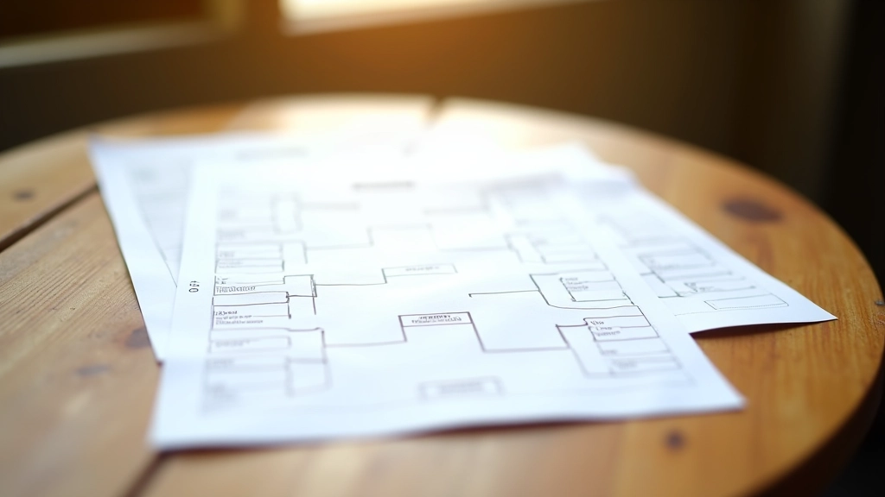

نظام المباراة الفردية: القواعس الأساسية
شرح مفصل لقواعد المباراة الفردية وكيفية حساب النقاط والفوز في المباراة. يشمل الأخطاء الشائعة وكيفية تجنبها.
دليل عملي لتنظيم جدول البطولة، إدارة النتائج، وتحديث التصنيفات. نماذج جاهزة للاستخدام المباشر.


الكاتب
فريق التحرير والمراجعة
كتبه فريق ملعب الكروكيه التحريري، متخصص في تقديم شروحات عملية وسهلة الفهم لأنظمة البطولات.
أي بطولة ناجحة تبدأ بتخطيط محكم. الجدولة السيئة تؤدي لالتباس، تأخير، واللاعبون يشعرون بعدم الرضا. لكن عندما تنظم الأمور بشكل صحيح؟ كل شيء يسير بسلاسة.
هنا نشرح كيف تبني جدول بطولة منظم، تدير النتائج بكفاءة، وتحدّث التصنيفات بشفافية. هذه ليست نظرية — هذه أدوات وعمليات فعلية تستخدمها البطولات الحقيقية.
الجدول الجيد يبدأ برقم واحد: كم لاعب لديك؟ هذا يحدد كل شيء آخر. إذا كان لديك 8 لاعبين، الهيكل مختلف تماماً عن 16 لاعب.
احسب العدد النهائي. الأرقام الزوجية أسهل (8، 16، 32)، لكن يمكنك التعامل مع أي عدد بقليل من التعديل.
هل تريد دوري (كل لاعب يلعب كل لاعب)؟ أم حذف مباشر (خسر = انتهى)؟ أم خليط؟ كل واحد يحتاج جدول مختلف.
كم ملعب متاح؟ كم مباراة يمكنك تشغيل في الوقت نفسه؟ هذا يحدد سرعة البطولة.
بعد كل مباراة، النتائج تحتاج إلى تسجيل بسرعة. والصيغة البسيطة هي: الفائز يحصل على نقطة واحدة. الخاسر يحصل على صفر. إذا كانت هناك تعادل — كلاهما يحصل على 0.5.
التصنيفات تُحدّث بعد كل جولة. اللاعب الأول دائماً من له أعلى نقاط. إذا تساوى اثنان، تحقق من نتيجة المباشرة بينهما.
نصيحة: استخدم جدول بيانات بسيط (Excel أو Google Sheets). لا تحتاج لشيء معقد. الصيغ البسيطة تعمل بشكل جيد وتقلل الأخطاء.
لا تريد أن تبني من الصفر؟ هنا الأشكال الشائعة:
كل لاعب يلعب 7 مباريات. الجولة 1 الاثنين، الجولة 2 الثلاثاء... وهكذا. 7 أيام للانتهاء.
الجولة الأولى: 8 مباريات. ربع النهائي: 4 مباريات. النصف: مباراتان. النهائي: واحدة. 4 جولات فقط.
الأفضل للبطولات الكبيرة. الجزء الأول دوري صغير (تصفيات). الفائزون يصعدون للحذف المباشر.

الخطأ الشائع الذي نراه؟ عدم إخبار اللاعبين بالتحديثات. نشر الجدول على الجدار أو في مجموعة WhatsApp. يجب أن يعرف كل لاعب: متى مباراته القادمة، من منافسه، النتيجة الحالية في الترتيب.
نحن نوصي بـ: لوحة فيزيائية (يسهل قراءتها من بعيد) + مشاركة رقمية (صورة الجدول في المجموعة). بهذه الطريقة لا أحد ينسى شيء.
التنظيم الجيد للبطولة ليس معقداً. إنه يتطلب ثلاثة أشياء فقط: خطة واضحة، تحديثات منتظمة، واتصال مستمر. عندما يشعر اللاعبون أن البطولة منظمة وعادلة، يستمتعون أكثر — حتى لو خسروا.
ابدأ بجدول بسيط، جرب نماذج مختلفة، وشوف ما يناسب حالتك. البطولات الرائعة لا تُبنى بين ليلة وضحاها. تُبنى بالممارسة والتحسن المستمر.
هذا الدليل يقدم معلومات تعليمية عامة حول تنظيم البطولات. القواعس والإجراءات قد تختلف حسب نوع البطولة والاتحاد الناظم والقوانين المحلية. ننصح بالتحقق من قواعس البطولة الرسمية قبل تطبيق أي إجراء.
اقرأ المزيد من أدلة نظام البطولات
شرح مفصل لقواعد المباراة الفردية وكيفية حساب النقاط والفوز في المباراة. يشمل الأخطاء الشائعة وكيفية تجنبها.

كيفية تنظيم بطولة فريق احترافية. نصائح عملية عن اختيار الفريق والتدريب والتكتيكات الفعالة.

كل ما يجب أن يعرفه الحكم عن القواعس والقرارات. حالات عملية وكيفية التعامل معها بعدالة وحزم.